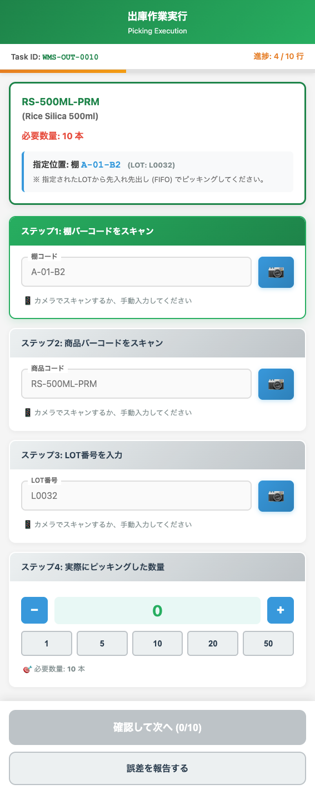

UI Spec
Warehouse Scan
Version 1.0 / 作成日: ________
UI Screen Specification – 倉庫スキャンインターフェース（Warehouse UI / WMS）
対象画面: タスク実行画面（ピッキング、入荷、棚移動）
想定利用者: 倉庫作業員（現場担当者）
画面の目的（ビジネス上の役割）
本画面は、Task App（タスク管理）で生成された作業指示を、現場で正確かつ効率的に実行・検証するためのモバイル対応インターフェースです。
- デジタルチェック: 現場での物理的な作業（ピッキング、検品）をバーコードスキャンで検証し、ミスを防止します。
- 実在庫更新のトリガー: 作業完了後、Task Appのステータスを「完了」に更新し、Physical Stock Appへの在庫増減をトリガーします。
- ロット・ロケーションの記録: どのロットを、どの棚から、どれだけ移動したかを正確に記録します。
利用者ストーリー（User Scenario）
- 倉庫作業員: タスク一覧（Warehouse UIのホーム画面）から、割り当てられたタスクIDを選択し、本画面に遷移する。
- 倉庫作業員: 画面の指示（「棚コードをスキャンしてください」）に従い、商品の保管場所（棚）のバーコードをスキャンする。
- 倉庫作業員: 次に商品のバーコード/ロットをスキャンし、ピッキング/検品した数量を入力・確認する。
- 倉庫作業員: 全ての指示が完了したら、【完了】ボタンを押して、作業の終了と実在庫の更新をシステムに報告する。
主要機能
- Task Appの指示内容に基づいたスキャン項目の表示と検証。
- 棚コード、バーコード、数量の手入力およびスキャン入力の受け付け。
- バーコード/ロット情報とTask Appの指示内容のリアルタイム照合。
- 作業完了時のTask Appへのステータス更新APIコール。
画面レイアウト
4.1 表示項目（Detail / Execution Interface）
本画面は、モバイルでの操作を前提とした、縦長のインターフェースです。
| 項目名 |
説明 / 連携ロジック |
| 指示情報 (表示エリア) |
Task Appから取得した現在の作業指示（タスクID、商品名、指示数量など）を表示。 |
| スキャン項目 (表示プロンプト) |
次に作業員が行うべきアクション（例: 「棚コードをスキャンしてください」）を指示。 |
| 棚コード |
入力フィールド: 商品の保管場所（棚）のコードをスキャンまたは入力。システムはTask Appの指示と照合する。 |
| バーコード |
入力フィールド: 製品/資材のバーコードまたはロット番号をスキャンまたは入力。 |
| 数量 |
入力フィールド: 実際に出荷/入荷/移動する数量（手入力）。 |
| 備考 / エラー表示 |
スキャン失敗時や数量超過時などにエラーメッセージを表示する領域。 |
| 【完了】 |
ボタン: 全てのステップが完了し、システムに在庫更新を要求するメインアクション。 |
| 【戻る】/【スキップ】 |
ボタン: 処理を中断/前のステップに戻る、またはマルチアイテムタスクで現在のステップをスキップする（権限が必要）。 |
4.2 スクリーンショット

図1. 倉庫スキャンインターフェース実行画面
お客様に確認いただきたい点
現場作業に関する重要な確認点です。
-
ロット検証の厳格性:
出荷タスクにおいて、スキャンされたロットが Task Appが指示するロット と完全に一致しない場合、
エラーとして処理を中断しますか？（はい/いいえ）
-
数量入力の上限:
作業員が
数量 を入力する際、Task Appの指示数量を超える値を入力した場合、
警告またはエラーとして処理をロックしますか？（エラーとしてロックする / 警告を出すが続行は可能）
-
端末環境:
本UIは、専用のバーコードリーダー付き端末（Android/iOS）での動作を前提としますか？（はい/いいえ）
開発向けメモ（Dev Notes）
-
Task App連携:
【完了】ボタン押下時、Ruby ServerのAPIをコールし、Task Appを「完了」に、
同時にPhysical Stock Appの在庫を増減させる処理を一連のトランザクションとして実行する。
-
スキャンバリデーション:
棚コード、バーコード、ロット番号の検証は全て、Task Appのレコード詳細情報と照合してリアルタイムに行う。
-
エラーハンドリング:
連続スキャンや大量入力に対応するため、エラーメッセージは簡潔に、
かつ画面上部に大きく表示する。